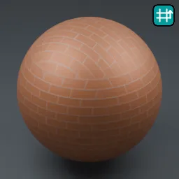
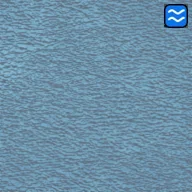
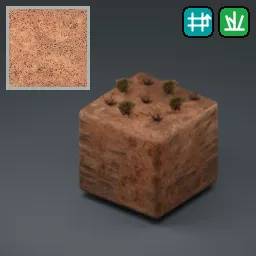
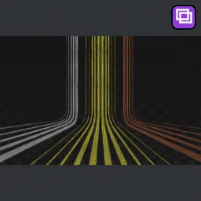
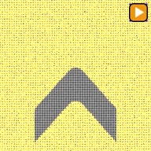
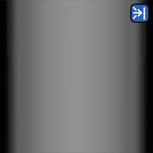
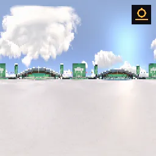
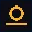

Asset library extension · Blender 5.3+
Trackmania 2020 - Materials Library
825 Trackmania materials and 20 HDRI Worlds in Blender's Asset Browser. Browse first, download what you need, and download updated material bundles when updates arrive.
Recognise the thumbnail badges

World projection
Texture layers use object position or surface direction; UV edits do not control every layer.
CustomBricks
Water
Identifies the water material family, including its Blender ripple preview.
Water
Foliage / sprites
Identifies vegetation or sprite-growth layers. The preview does not guarantee generated vegetation in game.
RedIsland DetailsToDirt
Parallax / depth
Layered screen depth changes with the viewing angle.
PodiumScreen155
Animation
Animated UVs, an image atlas or a time-driven material. In Blender, press Spacebar (default) to start or stop timeline playback. Saved thumbnails are static.
TurboRoulette Sign
Invisible / collision
An invisible or collision-related source marker. Actual behaviour depends on the source material and item.
Experimental Vehicles WheelMarksIce

HDRI World / moodScene lighting and background. Find day, night, sunrise and sunset presets under 06 HDRI World Moods.
Stadium Day worldInstall in Blender
- Open Blender 5.3 or newer and enable Online Access in Preferences → System.
- Drag the green install button from this page into Blender. If prompted, confirm adding the extension repository and installing the library. Blender may ask you to drag the button again after adding the repository.
- Under Preferences → Asset Libraries, enable Trackmania 2020 - Materials Library if needed. Select it in an Asset Browser.
No PowerShell, local server or full-library download is required.
Download and refresh
Apply an asset to download its small material bundle and shared packed textures. A bundle may contain several related materials, reducing duplicate downloads. For the whole collection, clear the Asset Browser's search and catalog filters, select all assets and choose Download Assets. All material files currently total approximately 3.35 GB; Blender's local cache also needs space.
Use Refresh Remote Listing to discover updates, then download changed assets. Only changed bundles need downloading again; unchanged bundles remain reusable. Materials already appended to an open project keep their current version until you replace them.
Manual installation and repository URL
Download the extension ZIP, then use Preferences → Get Extensions → Install from Disk.
To browse this extension from Get Extensions, add our repository:
https://bigthirstytm.github.io/TM2020-Material-Assets-Library/extensions/index.json
Materials Only
This extension contains the 825 native-linked material assets. The 20 HDRI World assets are included in their own catalog. Complete-only / Preview only entries are excluded. Blendermania and its MaterialLib setup are supplied separately.